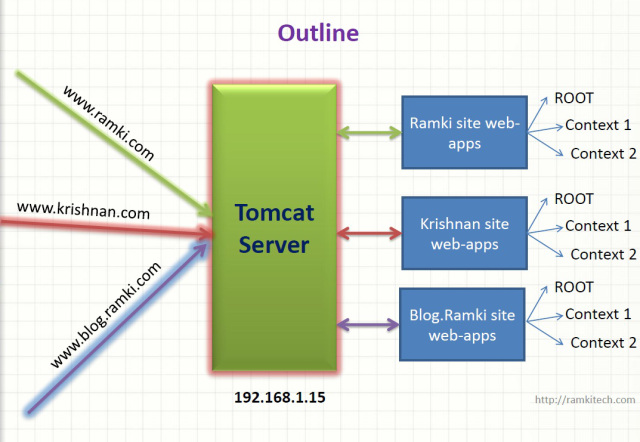

Understanding Virtual Host Concept in Tomcat
Scenario:
I am going to deploy 3 website with following domain names in single tomcat
http://www.ramki.com
http://www.krishnan.com
http://www.blog.ramki.com
The following diagram is my outline.
|  |
| Outline structure of Virtual Host Concept in Tomcat |
{kind=link}
Here my tomcat IP address 192.168.1.15. or any IP address allocated my ISP. but it should be public IP address.
How all domain names are pointing to my Tomcat?
When we purchase the domain name we need to update the our tomcat IP address to it. like
{kind=link}
or we can simulate same DNS Setup through hosts file in both Linux and Windows. In Linux tha file is located at /etc/hosts
Now How Setup Virtual Host Concept?
Before going to setup the virtual host. first take look at the server.xml file in conf folder in tomcat directory.
server.xml
- <server port=“8005” shutdown=“SHUTDOWN”>
- <service name=“Catalina”>
- <engine defaulthost=“localhost” name=“Catalina”>
- <host appbase=“webapps” autodeploy=“true” name=“localhost” unpackwars=“true”>
- </host>
- </engine>
- </service>
- </server>
here <Engine> tag specified which engine is responsible for executing servlet. Here Catalina is the Engine.
<Host> tag specify the domain name and web apps base location. here default domain name is localhost and web apps base location is webapps folder in tomcat directory. here name attribute to specify the domain name and appbase attribute to specify the location of domain specific web apps folder path.
Now we need to add more <Host> tags to represent to our domains
<Host name=“www.ramki.com” appbase=“ramki_webapps”/>
<Host name=“www.krishnan.com” appbase=“krishnan_webapps” />
<Host name=“www.blog.ramki.com” appbase=“blog_webapps” />
Then we need to copy the webapps folder in tomcat and paste it anywhere and rename it to ramki_webapps, krishnan_webapps, blog_webapps and update the path in <Host> tag
Modifies server.xml file
- <server port=“8005” shutdown=“SHUTDOWN”>
- <service name=“Catalina”>
- <engine defaulthost=“localhost” name=“Catalina”>
- <host appbase=“webapps” autodeploy=“true” name=“localhost” unpackwars=“true”></host>
- <host appbase=“ramki_webapps” autodeploy=“true” name=“www.ramki.com” unpackwars=“true”></host>
- <host appbase=“krishnan_webapps” autodeploy=“true” name=“www.krishnan.com” unpackwars=“true”></host>
- <host appbase=“blog_webapps” autodeploy=“true” name=“www.blog.ramki.com” unpackwars=“true”></host>
- </engine>
- </service>
- </server>
Simulate the DNS
Open the /etc/hosts file through root privilege and add following entry
192.168.1.15 http://www.ramki.com
192.168.1.15 http://www.krishnan.com
192.168.1.15 http://www.blog.ramki.com
deploy the websites to respective web apps folder and start the tomcat.
Test:
now open the browser and type http://www.ramki.com then its shows the ramk website content. Other two sites http://www.krishnan.com and http://www.blog.ramki.com works respective webapps.
{kind=link}
In above diagram represent when we access http://www.ramki.com the tomcat server consult with server.xml file and serves the files from ramki_webapps directory.
How is Virtual Host Works
Here big question all websites are pointed to same tomcat. How tomcat can distinguished the request. (i.e) how tomcat knows browser requested ramki.com or http://www.krishnan.com
The answer is based Host header field in HTTP request.
when we accssed http://www.ramki.com then browser make HTTP request. and the request look like this
GET / HTTP/1.1
Host: http://www.ramki.com
Proxy-Connection: keep-alive
User-Agent: Mozilla/5.0 (Windows NT 6.2) AppleWebKit/535.11 (KHTML, like Gecko) Chrome/17.0.963.56 Safari/535.11
Accept: text/html,application/xhtml+xml,application/xml;q=0.9,*/*;q=0.8
Accept-Encoding: gzip,deflate,sdch
Accept-Language: en-US,en;q=0.8
here Host Field contain domain name
Host: http://www.ramki.com
when tomcat receive the request from any browser, it read the Host field and understand which domain we requested, then consult the server.xml file and delegate to appropriate Host process thread
check my screen cast for setup
How to setup virtualhost in Tomcat
I recently had to configure a couple of different tomcat web applications as virtual hosts each one with its own domain. I was accessing these applications using the URL http://localhost:8080/app1 and http://localhost:8080/app2. The basic intention behind the virtual host setup was to avoid the web application name from the url (app1/app2) and the applications to be accessed using http://www.domain1.com and http://www.domain2.com/ . If there was only one web application I could have achieved it by keeping the web application inside webapps/ROOT folder.
Though I am using Apache as front server which was used to forward the dynamic content request to tomcat, I am not describing the Apache-Tomcat configuration in this article. I have described the Apache-Virtualhost-Tomcat-configuration in another article.
Step 1: Configuring Tomcat server.xml
Add the following entry in server.xml (TOMCAT_HOME/conf/server.xml). This should be added below to <Host name=”localhost” ..>…….</Host>
<Host name="www.domain1.com" appBase="/opt/tomcat/www.domain1.com" unpackWARs="true" autoDeploy="true" xmlValidation="false" xmlNamespaceAware="false"/>
<Host name="www.domain2.com" appBase="/opt/tomcat/www.domain2.com" unpackWARs="true" autoDeploy="true" xmlValidation="false" xmlNamespaceAware="false"/>
Step 2: Deploying the applications
Create folders http://www.domain1.com and http://www.domain2.com inside TOMCAT_HOME. Copy the webapp1 to http://www.domain1.com and webapp2 to http://www.domain2.com. Rename both webapp1 and webapp2 to ROOT (ensure ROOT should be in uppercase).
The following should exist after the completion of step2.
TOMCAT_HOME/www.domain1.com/ROOT/webapp1_contents
TOMCAT_HOME/www.domain2.com/ROOT/webapp2_contents
Step 3: Enabling Tomcat Manager Console for the new hosts
The default tomcat manager console (http://localhost:8080/manager/html) will not be available for the new hosts. Manager Console needs to be enabled for the application deployed under each virtual host. This can be done by following the below steps.
Create folders http://www.domain1.com and http://www.domain2.com under TOMCAT_HOME/conf/Catalina/. Copy manager.xml from TOMCAT_HOME/conf/Catalina/localhost/ to TOMCAT_HOME/conf/Catalina/www.domain1.com/ and TOMCAT_HOME/conf/Catalina/www.domain1.com/.
The tomcat manager console for the hosts http://www.domain1.com and http://www.domain2.com can be accessed using the URLs http://www.domain1.com:8080/manager/html and http://www.domain2.com:8080/manager/html respectively.
Step 4: Adding host entry for each virtualhost
In production/staging environments normally the domain would be mapped to the IP of the machine. However in development environments we need to map the IP with the virtualhost. This can be done by adding a host entry in the host file. The ‘hosts’ file is typically located at C:\WINDOWS\system32\drivers\etc\hosts on windows and /etc/hosts on UNIX
Machine-IP http://www.domain1.com
Machine-IP http://www.domain2.com
Step 5: verifying the virtualhosts
Restart the Tomcat Server and check whether the webapp1 and webapp2 are accessible using the URLs http://www.domain1.com:8080 and http://www.domain2.com:8080 respectively.
If you are using Apache web server and Tomcat, you can leave Tomcat running on port 8080. Otherwise simply change the port of tomcat from 8080 to 80.
With Tomcat running on JVM Host dedicated JVM you have full control over configuration files. You may host multiple domains and map them to particular web applications. First step is to map a domain or a directory under it to the Tomcat (this is done with mod_jk or mod_proxy_ajp using our JVMCP control panel), second step is to add virtual host in server.xml. See the below example.
You have 2 domains: primary domain domain1.com and addon domain domain2.com. Your ~/appservers/apache-tomcat/webapps directory:
$ls -al docs domain1 domain2 examples manager host-manager ROOT
Please put JSP files into domain1 and domain2 directories. Alternatively you can put domain1.war and domain2.war in webapps directory and Tomcat will deploy the wars.
- Domain1.com is the main domain (the main domain can point to different directory such as ROOT, anyway this is only example).
- Domain2.com is the domain that we want to add to Tomcat.
- You need create domain2.com as addon domain in cPanel.
- Please make sure you use correct nameservers for domain2.com.
- Create mappings – default mappings are enough. Use custom JVM control panel JVMCP for this.
- Configure $CATALINA_HOME/conf/server.xml file.
Please edit $CATALINA_HOME/conf/server.xml
<Host name="domain1.com" autoDeploy="true" appBase="webapps" unpackWARs="true">
<Alias>www.domain1.com</Alias>
<Valve className="org.apache.catalina.valves.AccessLogValve" directory="logs"
prefix="localhost_access_log." suffix=".txt"
pattern="%h %l %u %t "%r" %s %b" resolveHosts="false"/>
<Context path="" docBase="domain1" debug="0" reloadable="true"/>
</Host>
<Host name="domain2.com" autoDeploy="true" appBase="webapps" unpackWARs="true">
<Alias>www.domain2.com</Alias>
<Valve className="org.apache.catalina.valves.AccessLogValve" directory="logs"
prefix="localhost_access_log." suffix=".txt"
pattern="%h %l %u %t "%r" %s %b" resolveHosts="false"/>
<Context path="" docBase="domain2" debug="0" reloadable="true"/>
</Host>
Restart Tomcat using JVMCP or shell and your are done.
– See more at: http://www.jvmhost.com/articles/how-to-configure-tomcat-with-multiple-virtual-hosts#sthash.Yw1C4fx0.dpuf
With Tomcat running on JVM Host dedicated JVM you have full control over configuration files. You may host multiple domains and map them to particular web applications. First step is to map a domain or a directory under it to the Tomcat (this is done with mod_jk or mod_proxy_ajp using our JVMCP control panel), second step is to add virtual host in server.xml. See the below example.
You have 2 domains: primary domain domain1.com and addon domain domain2.com. Your ~/appservers/apache-tomcat/webapps directory:
$ls -al docs domain1 domain2 examples manager host-manager ROOT
Please put JSP files into domain1 and domain2 directories. Alternatively you can put domain1.war and domain2.war in webapps directory and Tomcat will deploy the wars.
- Domain1.com is the main domain (the main domain can point to different directory such as ROOT, anyway this is only example).
- Domain2.com is the domain that we want to add to Tomcat.
- You need create domain2.com as addon domain in cPanel.
- Please make sure you use correct nameservers for domain2.com.
- Create mappings – default mappings are enough. Use custom JVM control panel JVMCP for this.
- Configure $CATALINA_HOME/conf/server.xml file.
Please edit $CATALINA_HOME/conf/server.xml
<Host name="domain1.com" autoDeploy="true" appBase="webapps" unpackWARs="true">
<Alias>www.domain1.com</Alias>
<Valve className="org.apache.catalina.valves.AccessLogValve" directory="logs"
prefix="localhost_access_log." suffix=".txt"
pattern="%h %l %u %t "%r" %s %b" resolveHosts="false"/>
<Context path="" docBase="domain1" debug="0" reloadable="true"/>
</Host>
<Host name="domain2.com" autoDeploy="true" appBase="webapps" unpackWARs="true">
<Alias>www.domain2.com</Alias>
<Valve className="org.apache.catalina.valves.AccessLogValve" directory="logs"
prefix="localhost_access_log." suffix=".txt"
pattern="%h %l %u %t "%r" %s %b" resolveHosts="false"/>
<Context path="" docBase="domain2" debug="0" reloadable="true"/>
</Host>
Restart Tomcat using JVMCP or shell and your are done.
– See more at: http://www.jvmhost.com/articles/how-to-configure-tomcat-with-multiple-virtual-hosts#sthash.Yw1C4fx0.dpuf
http://www.jvmhost.com/articles/how-to-configure-tomcat-with-multiple-virtual-hosts
How to create virtual host for app on Tomcat.
NB! I will say right away, that my Tomcat is running on Ubuntu Server 10.10 under VMWare Workstation 7.
So here it goes. Recently I installed YouTrack issue tracker on my local server, that runs on Tomcat. Very soon I got tired from typing every time (ip_address/webapp_name:port). So I looked up how to create a very simple VirtualHost for Tomcat.
To create Tomcat VirtualHost you just need to edit tomcat_dir/conf/server.xml and inside Engine tag place following code:
|
1
2
3
4
5
|
<Host name="virtual_host_name" appBase="webapps/your_app_name" unpackWars="false" autoDeploy="false"> <Logger className="org.apache.catalina.logger.FileLogger" directory="logs" prefix="virtual_log." suffix=".txt" timestamp="true" /> <Context path="" docBase="path_to_your_webapp_from_root" debug="0" reloadable="true" /> <Valve className="org.apache.catalina.valves.AccessLogValve" directory="logs" prefix="virtual_log." suffix=".txt" pattern="common" /></Host> |
So in the end you will have to add this virtual_host_name to your windows hosts file and link to your VM ip address. Then you will be abble to access your like: virtual_host_name:8080.
With Tomcat running on JVM Host dedicated JVM you have full control over configuration files. You may host multiple domains and map them to particular web applications. First step is to map a domain or a directory under it to the Tomcat (this is done with mod_jk or mod_proxy_ajp using our JVMCP control panel), second step is to add virtual host in server.xml. See the below example.
You have 2 domains: primary domain domain1.com and addon domain domain2.com. Your ~/appservers/apache-tomcat/webapps directory:
$ls -al docs domain1 domain2 examples manager host-manager ROOT
Please put JSP files into domain1 and domain2 directories. Alternatively you can put domain1.war and domain2.war in webapps directory and Tomcat will deploy the wars.
- Domain1.com is the main domain (the main domain can point to different directory such as ROOT, anyway this is only example).
- Domain2.com is the domain that we want to add to Tomcat.
- You need create domain2.com as addon domain in cPanel.
- Please make sure you use correct nameservers for domain2.com.
- Create mappings – default mappings are enough. Use custom JVM control panel JVMCP for this.
- Configure $CATALINA_HOME/conf/server.xml file.
Please edit $CATALINA_HOME/conf/server.xml
<Host name="domain1.com" autoDeploy="true" appBase="webapps" unpackWARs="true">
<Alias>www.domain1.com</Alias>
<Valve className="org.apache.catalina.valves.AccessLogValve" directory="logs"
prefix="localhost_access_log." suffix=".txt"
pattern="%h %l %u %t "%r" %s %b" resolveHosts="false"/>
<Context path="" docBase="domain1" debug="0" reloadable="true"/>
</Host>
<Host name="domain2.com" autoDeploy="true" appBase="webapps" unpackWARs="true">
<Alias>www.domain2.com</Alias>
<Valve className="org.apache.catalina.valves.AccessLogValve" directory="logs"
prefix="localhost_access_log." suffix=".txt"
pattern="%h %l %u %t "%r" %s %b" resolveHosts="false"/>
<Context path="" docBase="domain2" debug="0" reloadable="true"/>
</Host>
Restart Tomcat using JVMCP or shell and your are done.
– See more at: http://www.jvmhost.com/articles/how-to-configure-tomcat-with-multiple-virtual-hosts#sthash.Yw1C4fx0.dpuf